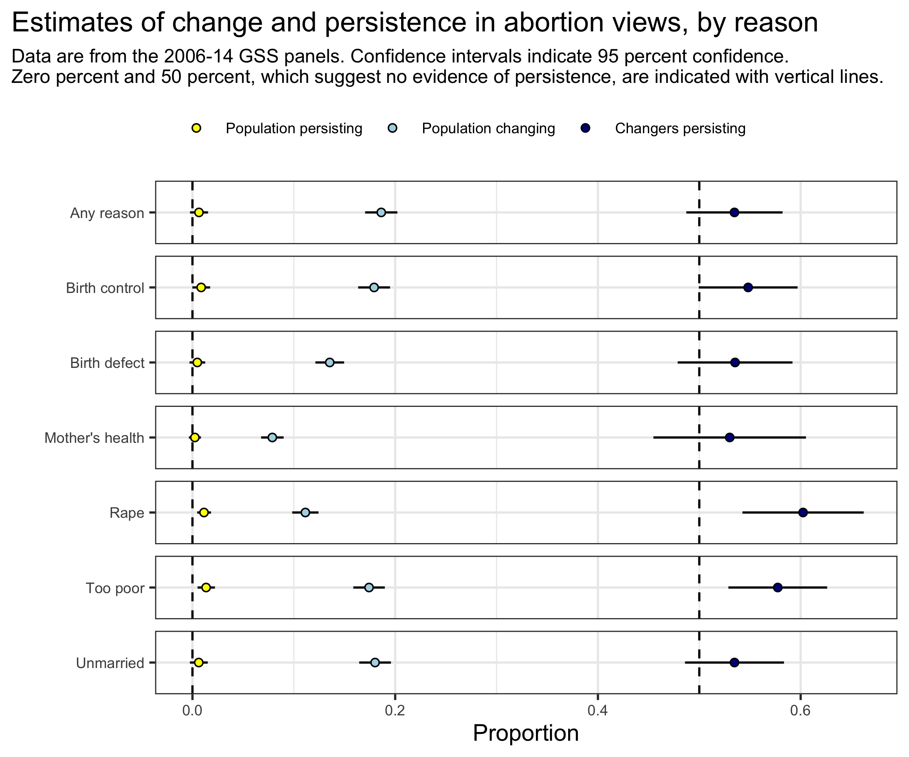
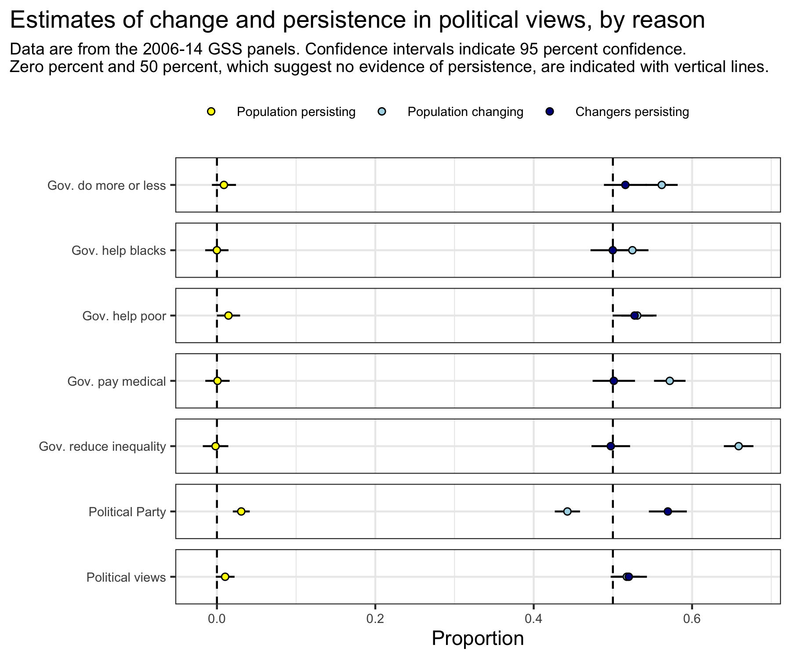

Nobody (really) changes
In my forthcoming American Sociological Review paper with Steve Vaisey, we look for evidence that people make persisting changes in attitudes and behaviors in the General Social Survey. We present one approach to measuring persistence in the paper, but we tested many approaches throughout the project. Over the next couple weeks I want go through some of the approaches we tried. And I’ll show how different approaches all produce the same result we find in the paper: persisting change in any kind of attitude is extremely rare in American adults.
Our paper argues that, at the individual level, people follow one of two models of attitude formation: a settled dispositions model, in which changes are temporary and people revert to their baseline, and an active updating model, in which changes persist.
One way to compare the prevalence of these two models is to simply count whether we see more people whose response patterns resemble persistent change than we would expect under the settled dispositions model. For a simple example, consider one of the seven GSS questions about conditions under which people support legal access to abortion: “Please tell me whether or not you think it should be possible for a pregnant woman to obtain a legal abortion if the woman wants it for any reason.” Respondents could select “yes” or “no” as responses.
Under the active updating model, a person who changed from saying “yes” at wave 1 to “no” at wave 2 should say “no” again at wave 3. Under the settled dispositions model, we should view it as equally likely that wave 1 or wave 2 is a temporary departure from the person’s baseline. As a result, we should guess that 50 percent of the time people who give different responses at waves 1 and 2 would say “yes” at wave 3 and 50 percent of the time they say “no.” In other words, we see people who look to be persisting simply because their wave 1 response was a temporary (or random) departure from their baseline.
Of the 2,297 people who responded to the abortion question over three waves, 424 (18 percent) gave different answers in waves 1 and 2. Under the settled dispositions model, in which deviations are equally likely in each wave, we would expect that 212 people would appear to be making persisting changes even when they are not, simply because of the three-wave structure.
What we see is that 227 people show a pattern of persistence, or just 15 more than expected if the settled dispositions model generated the data. That is not a lot of people. Those 15 percent of people account for less than 1 percent of the total sample. So already we can say that persisting change in this item is substantively rare.
Is that enough people to say that we see some evidence of persistence in the population? Would it be unusual to get that many people displaying evidence of persistence if there is no persistence in the population?
A simple calculation of confidence interval for the proportion of changers persisting, where we use the number of people who change (424) as the sample size, gives us a 95 percent confidence interval of [.487, .582], which includes 50 percent, meaning it is quite plausible that we get this value even if nobody is making any persistent change in the population.
The figure below shows estimates for the percent of the population changing, the percent of changers persisting, and, using those two values, the percent of the population making a persistent change, for the seven binary questions about abortion.

What should be obvious from the figure is that almost nobody makes a persistent change in any of these views on abortion in the GSS panels. There is only real evidence of persistence for the questions about abortion in the case of rape and if a woman is poor and cannot afford another child. For both questions, the best estimate is that one percent of the population makes a persistent change in a two-year period. This is the pattern thing we find in our paper using a different method.
This approach is easiest to justify with questions binary responses, where changes are always equal. Binary questions constitute about a third of GSS attitude questions and include questions about civil liberties, racial differences, laws, and suicide.
If we make the assumption that all one-unit changes in ordinal responses are equal, we can extend this approach to non-binary items. This might or might not be a viable assumption, depending on the question, which we can return to later. For the ordinal case, the question is not whether the respondent says the same thing in waves 2 and 3 more than chance, but rather whether, at wave 3, the respondent is closer to their response at wave 2 than wave 1.
The figure below shows estimates for the proportion of the population giving different responses for waves 1 and 2, the proportion of “changers” who are closer to their wave 2 response than their wave 1 response at wave 3, and the estimated proportion of the population making a persisting change, based on those values. These quesitons all have between five and seven response options on an ordinal scale.

Again, we see that for many of these questions, people who give different reports at waves 1 and 2 are as likely to be closer to their wave 1 response as their wave 2 response, which suggests the “settled dispositions” model is the more likely data-generating process. Because the scales have more potential values, the proportion of people giving different responses at waves 1 and 2 are higher, but there’s no more evidence of persistence than in the binary questions.
Kevin Kiley
Ph.D. Candidate
I’m a sociologist exploring the social origins of political and cultural attitudes and preferences. And I play with data.